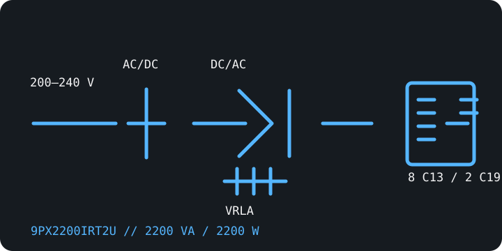

[ ONLINE DOUBLE-CONVERSION UPS // IDENTIFIED MODEL ]
Eaton 9PX2200IRT2U
A 2U international 9PX rack/tower SKU rated 2200 VA / 2200 W, with configurable 200–240 V output. This is the standard battery version; the suffix -L identifies a separate lithium-ion model.

ARCHIVAL IDENTIFICATION: Record the complete IRT2U suffix and battery chemistry. Do not mistake this 200–240 V international version for North American 120 V 9PX products.
Exact model specifications
| Catalog category / topology | Online UPS — double-conversion with sine-wave output. |
|---|---|
| Electrical ratings | 2200 VA / 2200 W; configurable 200/208/220/230/240 V AC output. Confirm the region, input supply and selected output voltage on the nameplate/manual. |
| Transfer behavior | 0 ms inverter transfer in normal online operation; bypass behavior is separate and must be checked in the installation guide. |
| Receptacles / connectors | Eight IEC C13 and two IEC C19 outputs; input connector and current limits must be verified for the exact regional version. |
| Battery / runtime | Internal hot-swappable sealed lead-acid battery panel; compatible external battery modules can extend runtime. Use Eaton's load/configuration-specific chart; age, charge and ambient temperature affect actual runtime. |
| Communication | LCD, USB, serial and remote-control connections; optional Mini-Slot network/management card. Network service depends on an installed supported card. |
| Compatibility / safety | Only connect equipment rated for the configured 200–240 V output and fitted with the correct IEC cords. This is not a 120 V North American model; provide the required supply, grounding and circuit protection per Eaton's installation instructions. |
Manufacturer references
- Eaton — 9PX2200IRT2U product/SKU pageManufacturer model record for the international 2U product.
- Eaton — 9PX 1–3 kW technical datasheetManufacturer technical specifications for the 9PX 1–3 kW product family; match the exact regional model.